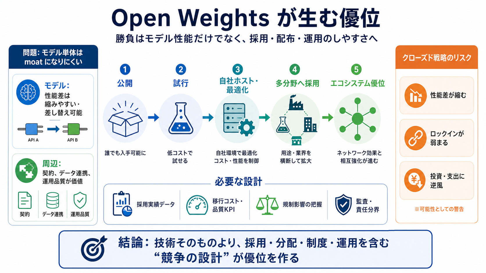

Trump administration's AI crackdown opens door for China ...
* The Trump administration's clampdown on AI could give China time to catch up to leading U.S. labs Anthropic and OpenAI…

* The Trump administration's clampdown on AI could give China time to catch up to leading U.S. labs Anthropic and OpenAI…
# Chinese AI models have lagged the US frontier by 7 months on average since 2023. We visualize the gap in capabilities …
2. The Models That Actually Matter Right Now. 3. The open weights story in 2026 is not what anyone predicted. In 2026,…
However, the government [reportedly](https://www.wsj.com/tech/ai/white-house-opposes-anthropics-plan-to-expand-access-to…
### A field map of Chinese AI labs and platforms: Qwen, DeepSeek, Kimi, ByteDance, and Alibaba. For two years the consen…